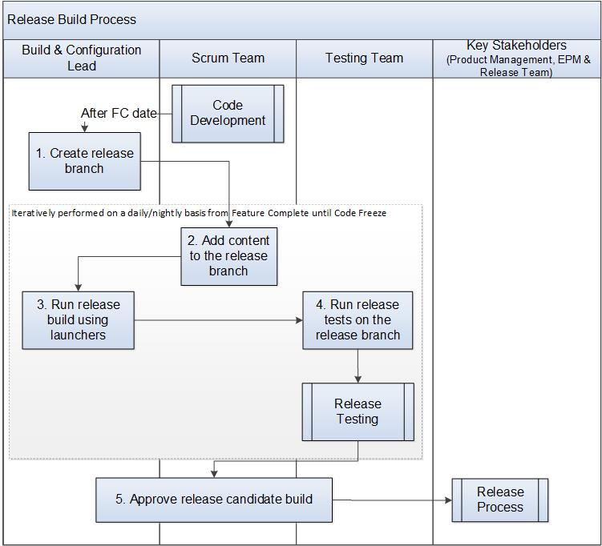

Release Build Process¶
This process describes how to create:
the spin/build (post Feature Complete code) on the Release branch for Release Verification Process.
the final spin/build (release candidate) for Release Process.
The Build & Configuration (B&C) Lead is responsible for the build in the release branch and the Release Lead from the release team is responsible for the release delivery.
Entry Criteria |
|
Inputs |
|
Exit Criteria |
|
Outputs |
|
Activities¶

Step # |
Activity Name |
Description |
|---|---|---|
1 |
Create release branch based on the integration branch in the repo. |
After the Feature Completion date, the B&C Lead spins off a side branch known as the Release branch for each product release (e.g., vx7-sr0660-features branch). Permissions are set for the release branch, including setting up pull request settings and merge strategy, default reviewers for pull requests, etc. |
2 |
Add content to the release branch |
The Scrum Team - Developer submits code to the release branch according to the Check in Procedure (post FC complete). The B&C Lead performs the maintenance of the release branch according to the Build and Config Release Branch Operations.
|
3 |
Run the spin/build using the launchers (e.g., Jenkins) |
The B&C Lead runs build scripts which:
Issues are filed as necessary for spin failures. |
4 |
Run release tests on the release branch |
The Testing team performs the Release verification (testing) - Automated and manual tests. See Release Verification Process. Issues are filed as necessary for any test failures. See Defect Management Process. Note: Steps 2-4 happens on a daily/nightly basis from the point Feature Complete until Code Freeze. |
5 |
Approve release candidate build |
The release candidate build is approved by the Key Stakeholders e.g., EPM, PM, Test and Dev Team. The B&C Lead creates the release candidate build from the release branch based on the code freeze/release criteria. The EPM initiates Release Process. |
Change Log¶
Date |
Change Request ID |
Version |
Change By |
Description |
05/04/2020 |
N/A |
0.1 |
Shree Vidya Jayaraman |
Initial Draft |
06/29/2020 |
N/A |
0.2 |
Shree Vidya Jayaraman |
Updates based on Kitty’s feedback |
06/30/2020 |
N/A |
0.3 |
Shree Vidya Jayaraman |
Updates based on Mike and Alan’s feedback |
07/01/2020 |
N/A |
0.4 |
Shree Vidya Jayaraman |
Updates based on Kitty’s feedback |
07/13/2020 |
N/A |
0.5 |
Shree Vidya Jayaraman |
Updates based on Kitty’s feedback |
07/22/2020 |
N/A |
0.6 |
Shree Vidya Jayaraman |
Updates based on Kitty’s feedback |